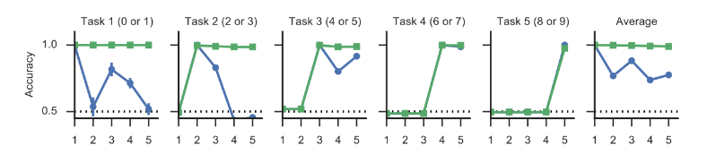
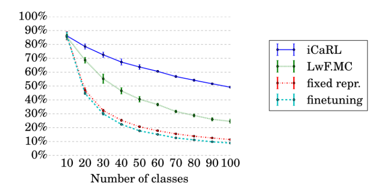
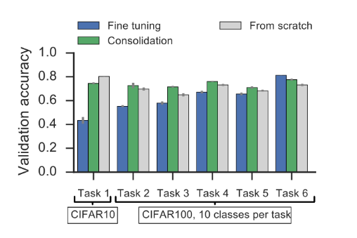

Continuous Learning Benchmarks
In this constantly updated page we keep track and categorize the most popular benchmarks for Continuous Learning (CL).
Given the novelty of the topic, very few benchmarks has been specifically designed for assessing CL strategies. Much of them are based on "remixed" versions of common vision datasets such as CIFAR or MNIST and are not completely coherent among each others. To make things clearer here we propose a broad categorization of these benchmarks in two modalities we denote as Multi-Task (MT) and Single-Incremental-Task (SIT).
Multi-Task vs Single-Incremental-Task
Most of Continuous Learning studies focus on a Multi-Task scenario, where the same model is required to learn incrementally a number of isolated tasks without forgetting the previous ones.
For example in [5], MINIST is split in 5 isolated tasks, where each task consists in learning two classes (i.e. two digits). There is no class overlapping in different tasks, and accuracy is computed separately for each task. Average accuracy over tasks is also reported (see Fig. 1).

Fig. 1: The first 5 graphs show the accuracy on each task as new task are learned. The blue curve (simple tuning) denotes high forgetting, while green curve (Synaptic Intelligence approach) is much better. The last graph on the right is the average accuracy over the tasks already encountered [5].
A still largely unexplored scenario, hereafter denoted as Single-Incremental-Task is addressed in [1] and [4] (in particular [4] refers to this approach as class-incremental). This scenario considers a single task which is incremental in nature. In other words, we still add new classes sequentially but the classification problem is unique and when computing accuracy we need to distinguish among all the classes encountered so far.
This is quite common in natural learning, for example in object recognition: as a child learn to recognize new objects, they need to be discriminated w.r.t. the whole set of already known objects (i.e., visual recognition tasks are rarely isolated in nature!). It is worth noting that single-incremental-task scenario is much more difficult than the multi-task one. In fact:
- We still have to deal with Catastrophic Forgetting.
- We need to learn to discriminate classes that typically we never see together (e.g. in the same batch), except when a memory buffer is used to store/replay a fraction of past data.
For example, Fig. 2 reports accuracy on single-incremental-task CIFAR-100 scenario while Fig. 3 shows accuracy on multi-task scenario for a similar setup. Although results are not directly comparable (i.e. the model and training are different) the resulting accuracy for finetuning strategy varies from about 20 to 60%.

Fig. 2: The graph shows the accuracy on CIFAR-100 with 10 classes per batch in the single-incremental-task scenario. Note that after 5 batches (number of classes 50) finetuning accuracy is about 20% [4].

Fig. 3: The graph shows the accuracy on CIFAR-10/100 with 10 classes per batch in the multi-task scenario. The columns denote the accuracy on single tasks at the end of training. Here average finetuning accuracy is about 60%. Consolidation refers to synaptic intelligence approach [5].
Not only New Classes
Almost all continuous learning benchmarks focuses on New Classes (NC) scenario, where the new training batches consists of pattern of new classes. In [1] we proposed three continuous learning scenarios:
- New Instances (NI): new training patterns of the same classes becomes available in subsequent batches with new poses and environment conditions (illuminations, background, occlusions, etc..). A good model is expected to incrementally consolidate its knowledge about the known classes without compromising what it learned before.
- New Classes (NC): new training patterns belonging to different classes becomes available in subsequent batches. In this case the model should be able to deal with the new classes without losing accuracy on the previous ones.
- New Instances and Classes (NIC): new training patterns belonging both to known and new classes becomes available in subsequent training batches. A good model is expected to consolidate its knowledge about the known classes and to learn the new ones.
Almost all studies published so far consider NC scenario only. Some exceptions are:
- CORe50 [1]: NI, NC and NIC in single-incremental-task mode.
- Permuted/Rotated MNIST [2][3]: classes are the same but the input representation is changed for each task (pixel permutation or rotations). Tasks are here isolated too, so we are still in a multi-task modality.
- Atari Games [4]: this is an interesting setup for Continuous Reinforcement Learning. While tasks are kept isolated (multi-task mode), task learning is interleaved (similar to NIC scenario in CORe50) and task identification is not explicitly provided (unsupervised).
To sum up, here we propose a constantly updated table summary of the most popular Continuous Learning benchmarks and on which modality they have been used so far:
| Benchmark |
Multi-Task |
Single-Incremental-Task |
Used in |
| Permuted MNIST |
yes |
no |
[2][3][5] |
| Rotated MNIST |
yes |
no |
[3] |
| MNIST Split |
yes |
no |
[5] |
| CIFAR10/100 Split |
yes |
yes |
[3][4][5] |
| ILSVRC2012 Split |
no |
yes |
[4] |
| Atari Games |
yes |
no |
[2] |
| CORe50 |
no |
yes |
[1] |
References